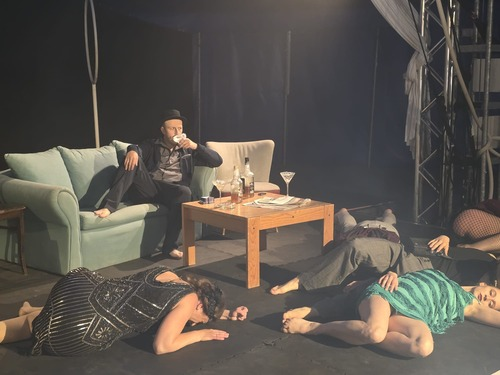

Startseite
Theater
Musik
Über mich
Das Theater spielen
Einleitungstext
Überblick
Seit:
Bereich:
Schwerpunkte:
Stücke und Rollen
Stückname - Rolle
Jahr: - Ort:
Kurzbeschreibung
Stückname - Rolle
Jahr: - Ort:
Kurzbeschreibung
Stückname - Rolle
Jahr: - Ort:
Kurzbeschreibung
Fotos
Bildbeschreibung
Bildbeschreibung

Bildbeschreibung